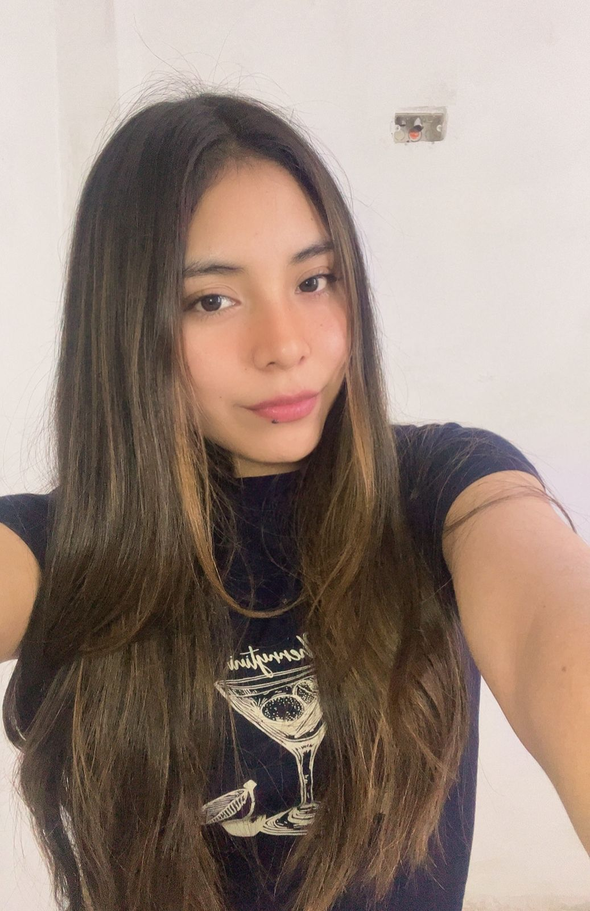

Construyo sistemas pensando en el futuro: escalables, sostenibles y centrados en las personas.
Introducción
¡Hola! Soy Josué Florián, un estudiante de 20 años que actualmente cursa el séptimo ciclo de la carrera de Ingeniería Informática en la Universidad Peruana Cayetano Heredia.
- Perteneciente al décimo superior
- Representante de la facultad de Ciencias e Ingeniería en la Asamblea Universitaria
- Miembro activo en la representación y promoción de la carrera de Ingeniería Informática
Sobre mí
A lo largo de mi trayectoria, he cultivado una pasión por el desarrollo de software, una disciplina en la que aspiro a destacar mediante la combinación de aprendizaje continuo y experiencia práctica en proyectos innovadores.
Me considero una persona proactiva, con habilidades para trabajar en equipo y una mentalidad orientada a la solución de problemas. Estoy siempre dispuesto a aprender y enfrentar nuevos desafíos.
Habilidades Técnicas
- Nivel de Inglés - Avanzado
- Desarrollo Backend con Python y .NET, implementación y optimización de APIs RESTful
- Programación en Python, Kotlin, C y C++
- Uso de Docker, Kubernetes y despliegue en la nube (AWS)
- Metodologías ágiles (Scrum) para gestión de proyectos
- Gestión de bases de datos SQL y MongoDB
- Dominio de herramientas de análisis de datos como Power BI y Excel
- Diseño de entornos 3D con Unity y Blender
Experiencia Profesional
Desarrollé e integré una solución de software en el sistema de la universidad que agilizó el proceso de matrícula estudiantil, mejoró la satisfacción durante el periodo de inscripción y se construyó aplicando buenas prácticas de desarrollo y documentación bajo la metodología SCRUM.
Desarrollé una API de Text-To-Speech (TTS) en español con soporte para acentos regionales, optimizando la fluidez e entonación; la contenedoricé y publiqué en Docker Hub para garantizar su escalabilidad y portabilidad, integrando técnicas de procesamiento de lenguaje natural (PLN) y deep learning para mejorar la síntesis de voz.
Lideré el desarrollo de una solución de realidad virtual para Meta Quest 2 utilizando Unity, enfocándome en experiencias interactivas escalables; investigué, adapté e implementé funciones desde repositorios de GitHub optimizando la eficiencia del código y la experiencia del usuario; diseñé modelos 3D y entornos virtuales aplicando principios de rendimiento y optimización; y gestioné el proyecto bajo metodologías ágiles (Scrum).
Objetivos Profesionales
Convertirme en arquitecto de software, desarrollando soluciones escalables y de impacto social. Mientras avanzo hacia ese rol, busco crecer como desarrollador, aprendiendo de distintos entornos tecnológicos y contribuyendo con código de calidad, visión sistémica y trabajo en equipo.
Proyecto 1: Tutor Matemático Académico con Sistema de Voz

Descripción: Desarrollo de un tutor interactivo que asiste a niños en el aprendizaje de matemáticas mediante preguntas y respuestas por voz, haciendo el proceso más amigable y didáctico. Utiliza Python junto con la librería SoundHelper para ofrecer una experiencia auditiva dinámica.
Colaboradores:
-
Josué Florián
-
 Romina Pérez
Romina Pérez
-
 Camilla Pacora
Camilla Pacora
Proyecto 2: Analizador con Machine Learning de Retinopatías

Descripción: Desarrollo de un modelo de machine learning capaz de clasificar imágenes médicas en casos positivos o negativos de retinopatías. El sistema fue implementado en Python, utilizando técnicas de inteligencia artificial y librerías de análisis de imágenes. Logramos alcanzar una precisión del 90% y redactar un artículo académico sobre el proyecto.
Colaboradores:
-
José Cueva
-
 Bruno Gavidia
Bruno Gavidia
-
 Arny Salazar
Arny Salazar
-
 Edwin Jara
Edwin Jara
-
Josué Florián
Proyecto 3: VentusSolaris Analyzer

Descripción: Proyecto interdisciplinario enfocado en la medición de irradiancia solar y velocidad del viento mediante módulos sensores conectados a dispositivos IoT. El sistema recopila datos en distintos puntos de una zona para evaluar la viabilidad de instalar generadores eléctricos. Se utilizó comunicación por ondas de radio, dispositivos ESP32 y una plataforma web para visualizar informes técnicos de viabilidad. El sistema fue desplegado en zonas rurales y ha sido patentado.
Colaboradores:
-
 Cindy Pérez
-
Romina Pérez
-
Maylin Vásquez
-
Edwin Jara
-
Josué Florián
Proyecto 5: Studyhive

Descripción: Plataforma educativa que adapta herramientas de estudio personalizadas según el estilo de aprendizaje del usuario, determinado mediante un formulario validado con respaldo científico. Ofrece motivación mediante música y frases inspiradoras, visualización del progreso comunitario, retos semanales y gamificación para aumentar la productividad. También permite un seguimiento detallado del tiempo de estudio total.
El proyecto fue presentado en concursos de innovación y emprendimiento, alcanzando la fase de semifinales gracias a su enfoque integral y personalizable en el estudio.
Colaboradores:
-
 Leily Llanos
Leily Llanos
-
Bruno Gavidia
-
 Víctor Huarcaya
Víctor Huarcaya
-
Edwin Jara
-
 Josué Florián
Josué Florián
Proyecto 6: HereDocs

Descripción: Plataforma web desarrollada como parte de una pasantía en la Escuela de Ingeniería, diseñada para asistir a estudiantes universitarios en el proceso de matrícula. Permite buscar rápidamente los sílabos de los cursos del siguiente ciclo académico y genera un plan de estudios personalizado considerando cursos pendientes, requisitos y restricciones curriculares institucionales. Su objetivo es optimizar la planificación académica individual y reducir errores durante la matrícula.
Se integró exitosamente al sistema de la universidad, generando una mejora significativa en la experiencia estudiantil y aumentando el nivel de satisfacción con el proceso de matrícula.
Colaboradores:
-
 Jhunior Herrera
Jhunior Herrera
-
Josué Florián
Proyectos
Certificados
-
Scrum Fundamentals Certified

-
Career Essentials in Software Development


-
Desarrolla tus habilidades de productividad con IA generativa
-
DevOps Professional Certificate

-
Docker Foundations Professional Certificate

-
TRL Technology readiness levels

-
Explore a career as a web developer
Testimonios
"Trabajar con Florián fue una experiencia maravillosa. Su profesionalismo y atención al detalle son incomparables."
- Juan Pérez, CEO de Tech Solutions"Su capacidad para resolver problemas complejos con soluciones simples es sorprendente. Lo recomiendo ampliamente."
- María López, Gerente de Proyectos"Siempre dispuesto a ayudar, Florián es un excelente colaborador. Estoy muy contento de haber trabajado con él."
- Carlos García, Consultor de TI